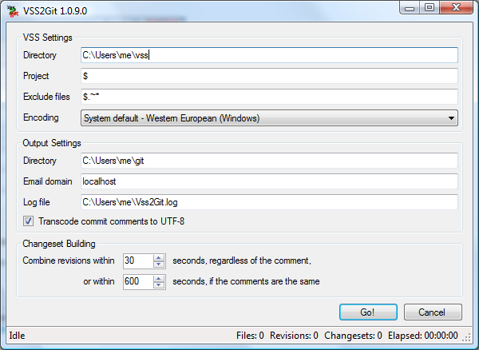

Vss2Git
Written by Trevor Robinson (trevor@scur|REMOVETHIS|rilous.com).
Copyright © 2009 HPDI,
LLC.
Product and company names mentioned herein may be trademarks of their
respective owners.
What is it?
The Vss2Git project contains several components:
- Vss2Git
is a Windows GUI application that exports all or
parts of an existing Microsoft
Visual
SourceSafe 6.0 (VSS) [Wikipedia]
repository to a new Git
repository. It attempts to construct
meaningful changesets (i.e. Git
commits) based on chronologically
grouping individual project/file revisions.
- VssDump
is a console-based diagnostic tool that prints a
plain-text dump of the contents of a VSS repository.
- VssLogicalLib
provides a .NET API for reading the contents
and history of a VSS repository.
- VssPhysicalLib
is a set of low-level classes for reading
the various data files that make up a VSS database.
- HashLib
is a generic stateless hashing API that currently
provides 16- and 32-bit CRC
generation.
All components are written in C# using the Microsoft .NET
Framework.
How is it licensed?
Vss2Git is open-source software, licensed under the Apache License, Version 2.0 (plain text).
Accordingly, any
use of the
software is at
your own risk. Always back up your VSS
database
regularly, and especially before attempting to use this software with
it.
What are its goals?
Several key features not found in other VSS migration tools
inspired this project:
- Preserving as
much history as possible from the VSS database, including
deleted and renamed files. Vss2Git replays the history of the VSS
database from the very beginning, so it is possible to reconstruct any
prior version of the tree. Only explicitly destroyed or externally
archived (but not restored) history should be lost. Ideally, a migrated
VSS database should never need to be consulted again.
- Making
historical changes easily comprehensible. Migration tools
that simply do a one-pass traversal of the files currently in the
repository, replaying all the revisions of each file as it is
encountered, generate version history that is difficult to correlate
among multiple files. Vss2Git scans the entire repository for
revisions, sorts them chronologically, and groups them into
conceptually changesets, which are then committed in chronological
order. The resulting repository should appear as if it
were maintained in Git right from the beginning.
- Robustness,
recoverability, and minimal user intervention.
Vss2Git aims to be robust against common VSS database inconsistencies,
such as missing data files, so that migration can proceed unattended.
However, serious errors, such as Git reporting an error during commit,
necessarily suspend migration. In such cases, the user is presented
with an
Abort/Retry/Ignore dialog, so that manual intervention is an option.
- Speed.
Vss2Git takes negligible CPU time. It can scan and build changesets for
a 300MB+ VSS database with 6000+ files and 13000+ revisions in about 30
seconds (or under 2 seconds if the files are cached) on a modern
desktop machine. Total migration
time is about an hour, with 98% of the time spent in Git.
Admittedly, some potentially interesting features are
currently outside the scope of the project, such as:
- Incremental
migration. Vss2Git currently always exports the entire
history of the selected files, and it does not attempt to handle
conflicts with files already in the Git repository prior to migration.
- Handling of
corrupt databases. Vss2Git will fail to process VSS data
files with CRC errors. If you encounter such errors, run the VSS
Analyze.exe tool with the "-f" option. Make sure to back up your
database first.
How well tested is it?
This
code has not been extensively tested. Vss2Git
was developed in about 2 weeks with the primary
purpose of migrating HPDI's VSS database to Git. With more than 300MB
of data and 13000 revisions committed over 7 years, that should be
reasonably representative of a large repository, but it is only one
dataset. If you decide to use Vss2Git, please let me know how it works
for you, and if you'd like me to add stats for your database here.
Usage tips
- Run Vss2Git on a local backup
copy of your repository. Not only will this avoid
jeopardizing your production repository, the migration will run much
faster accessing a local copy than one on a network share.
- Real-time virus/malware scanners, including Windows
Defender, can
interfere with Git updating its index file, causing it to fail with
errors like "fatal: Unable to write new index file". You may need to
configure these tools to exclude scanning the output Git repository
path if possible, or temporarily disable them if not.
- Generally, the Git output directory should be empty or
non-existent. When re-running the migration, you should delete
everything in the directory, including the .git subdirectory.
(Vss2Git doesn't do this for you for two reasons: 1) to avoid
accidental data loss, and 2) to allow merging of repositories.)
Vss2Git currently uses "git add -A" when committing changes, so any
untracked files that happen to be present will be included in the first
commit.
- Migration can start at any project in the VSS
database and includes all subprojects. VSS paths start with "$" as the
root project, with subproject names separated by forward slashes (e.g.
"$/ProjectA/Subproject1").
- You can exclude files by name from the migration by listing
patterns in the dialog box. The patterns are separated by semicolons
and may include the following wildcards:
- "?" matches any single character except a slash or
backslash.
- "*" matches zero or more characters except slash
or backslash.
- "**" matches zero or more characters (including slash and
backslash).
- VSS has some features that have no analogous
feature in Git. For instance:
- Branched files are simply copied. While Git will avoid
storing a redundant copy of the file in its database (since the content
hash will be identical), Git does not track that the file was copied.
(However, "git log -C", and especially, "git log --find-copies-harder",
can be used to locate copies after the fact.)
- Similarly, shared files are not directly supported.
Vss2Git will write each revision of a shared file to each directory it
is shared in, but once migration is complete, future changes must be
kept in sync by the user. Git technically supports using symlinks to
achieve a similar effect, but by default on Windows, they are checked
out as plain files containing a text link.
- Directories are not first-class objects in Git, as they
are in VSS. They are simply tracked as part of the path of the files
they contain. Consequently, actions on empty directories are not
tracked.
- VSS labels are applied to specific projects. Vss2Git
translates these as Git tags, which are global to the repository.
Known issues
- The Git executable needs to be on the Windows search path
(i.e. the PATH environment variable).
- Currently, only one VSS project path is supported. To
include disjoint
subtrees of your database, you'll need to run Vss2Git multiple times.
Unfortunately, this means that the commits won't be in chronological
order overall, and that commits containing files from separately
migrated projects will never be combined.
- Vss2Git includes a simplistic algorithm for generating
author
email addresses from VSS user names: it converts the name to lower
case, replaces spaces with periods, and appends the domain name
specified in the dialog box. For example, "John Doe" becomes
"john.doe@localhost". This is adequate for many cases, but obviously
not all. For now, you may wish to hack GitExporter.GetEmail().
- Git has difficulty dealing with changing the case of a
filename
on a case-insensitive file system (e.g. Windows). Vss2Git does contain
a workaround for this, which involves executing "git mv" twice, once to
rename to a temporary name, and then to rename to the final name. This
worked for me with msysgit 1.6.2, but there's no guarantee it will work
in all cases or with all versions.
Screenshot

Resources
The following links may be useful to anyone migrating from VSS
and/or to Git. If Vss2Git does not meet your needs, perhaps one of the
other migration tools listed will.
Release Notes
1.0.11 – 11 Sep 2016
- Option to ignore Git errors (thanks to David E. Smith)
- Allow and preserve empty commit messages (thanks to Maxim Degtyarev)
- Fix installer to also detect .NET 4.0 and later
- Upgrade project files to Visual Studio 2015
- Fix some URLs that still referred to old home on Google Code
1.0.10 – 6 Sep 2010 (Bug fixes based on patches from Matthias Luescher)
- Format commit date/time according to ISO 8601 to avoid locale issues
- Set committer environment variables on commit, in addition to author
- Add option to force usage of annotated tags
- Naming and initial version fixes for branched files
- (Re)write target file if a branching action is applied to a project
- Do not delete files that have already been replaced by a new file with the same logical name
- Do not try to rename files that have already been deleted
- Support .Net 4 by disambiguating reference to VssPhysicalLib.Action
1.0.9 – 18 Aug 2009
- Suppress all actions against destroyed items (e.g. fixes "bad source" error from "git mv")
- Remove (empty) directory when a project is moved to a (subsequently) destroyed project
- Quote shell operators (& | < > ^ %) when running git.cmd via cmd.exe
- Use a temporary file for comments containing newlines
- Skip "git add" and "git commit" for destroyed files
- Made "transcode comments" setting persistent
1.0.8 – 14 Aug 2009
- Fixed handling of projects restored from an archive
- Fixed handling of labels that differ only in case
- Fixed handling of label comments (implemented incorrectly in 1.0.7)
- Fixed FormatException in reporting unexpected record signature
- Improved reporting of errors during revision analysis
- Added RecordException base class to VssPhysicalLib
- Added RecordTruncatedException, which wraps EndOfBufferException while reading records
- Added commit date/time and user for tags
- Added VSS2Git version in log output
1.0.7 – 22 Jul 2009
- Fixed reading comments for labels
- Ignore empty labels
- Added support for labels and filenames that start with dashes
- Create all subdirectories for a project when it becomes rooted
- Explicitly add files to Git as they are created, to make them visible to subsequent directory operations
1.0.6 – 22 Jul 2009
- Quote temporary file path on Git command line if it includes spaces
- Support case-only renames for empty and parent projects
1.0.5 – 17 Jun 2009
- Ensure tag names are globally unique by appending a number
1.0.4 – 16 Jun 2009
- Configurable VSS database text encoding
- Optionally transcode Git comments to UTF-8
- Automatically configure Git repository for non-UTF-8
encoding
- Added output encoding support to VssDump
- Improved changeset building to include file/project
creation comments
1.0.3 – 14 Jun 2009
- Ignore file edits to unrooted projects (fixes "Value cannot
be null. Parameter name: path1" error)
- Ignore tags before initial commit (fixes "Failed to resolve
'HEAD' as a valid ref" error)
- Write VSS label names to log if they differ from the tag
name
1.0.2 – 5 Jun 2009
- Log full exception dumps
- Log root project and exclusion list
- Log changeset ID when dumping each changeset
- Save settings before migration
1.0.1 – 4 Jun 2009
- Search PATH variable for git.exe or git.cmd
- Strip illegal characters from tag names
- Improved error reporting
1.0 – 22 Apr 2009